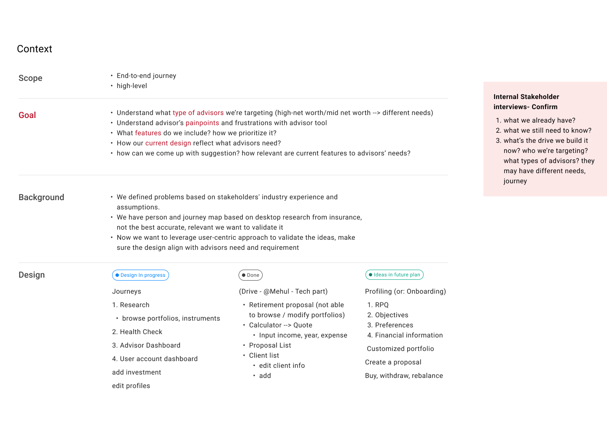
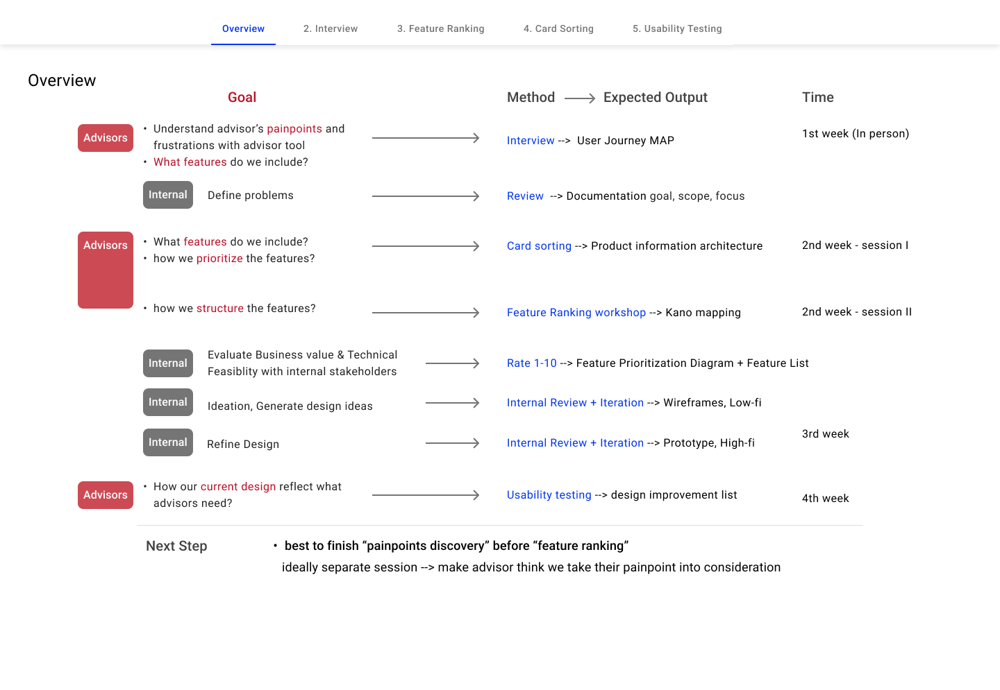
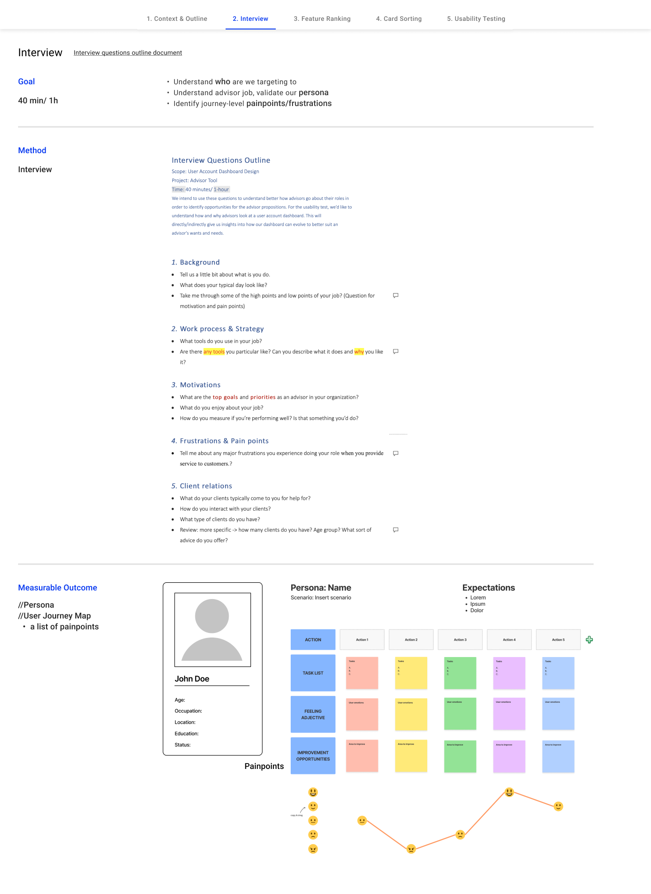
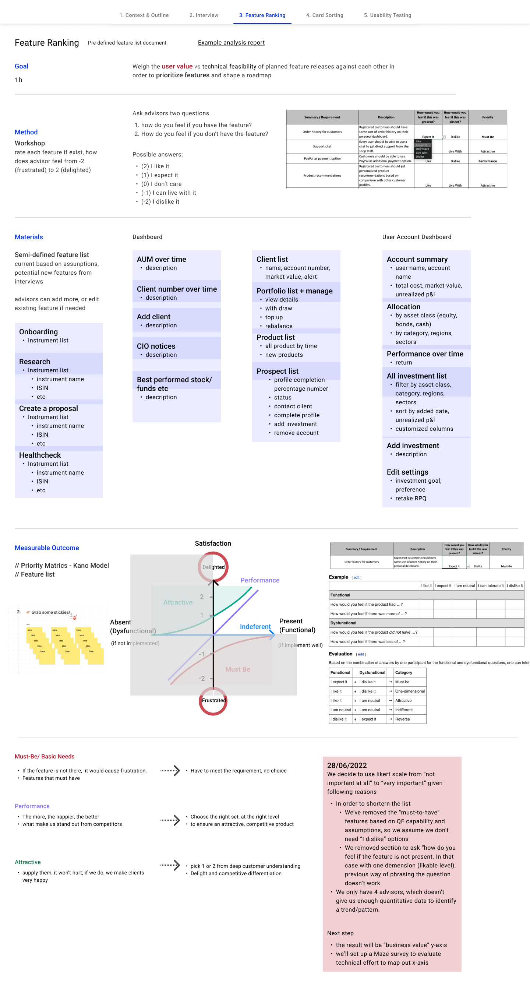
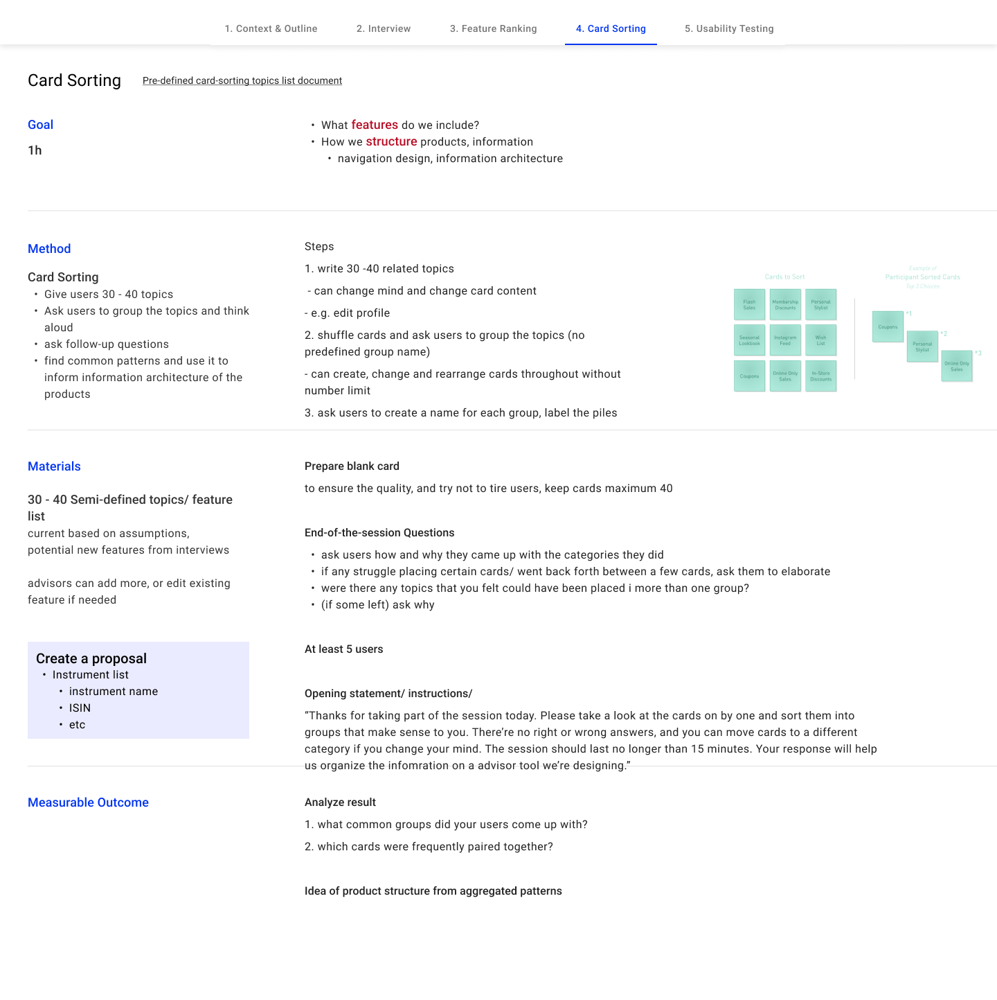
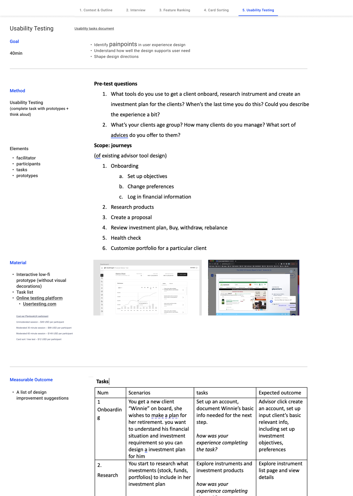
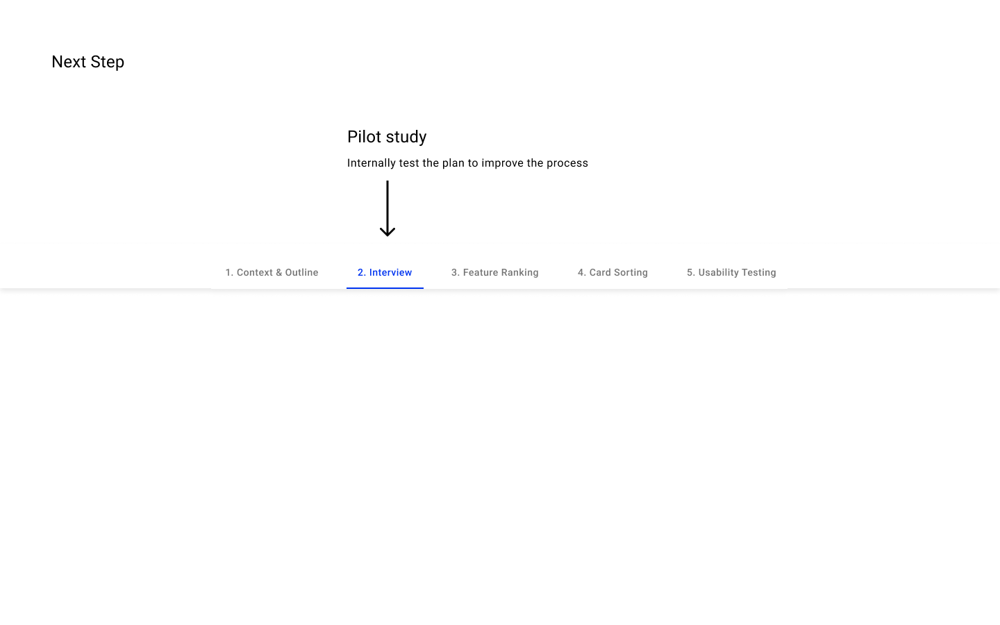
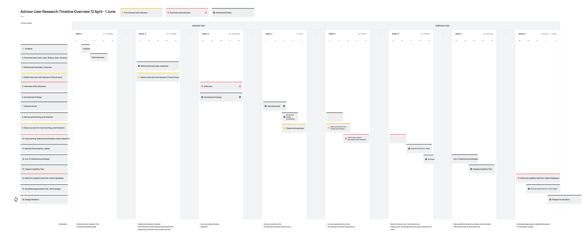

Build roadmap for financial advisor tool with user-centric approach
// 1 month | Product Design Design
// 1 Designer + 1 client success manager

// 1 month | Product Design Design
// 1 Designer + 1 client success manager
We are building a financial advisor tool leveraging current technology capability. To have a direction what to build in the tool, I came up with a user-centric approach to help us from understanding advisor's work journey, painpoints to feature prioritization.


With the design team, I lauched desktop research and workshop to extract the common modules that all customer, advisor tool and management tools have. Based on the result, we’re able to define what structure and modules to have in the first fold of the screen, and documented the differences between customer and investment professional tools.


Weigh the user value vs technical feasibility of planned feature releases against each other in order to prioritize features and shape a roadmap

Identify painpoints, user needs and shape design directions


